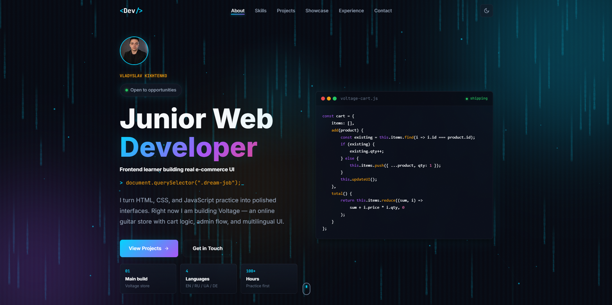
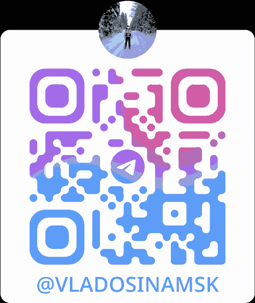

Voltage is one concrete product case; the system is built to support more projects without rewriting the whole story.
Vladyslav Kikhtenko
Open to opportunities
Vladyslav Kikhtenko
Junior Web Developer building proof-first interfaces
> _
I build polished responsive interfaces with HTML, CSS, and JavaScript. Voltage is one featured e-commerce case, while the portfolio also tracks UI systems, quality checks, and future project work.
Building polished interfaces through real projects, proof systems, and practical UI experiments.
Current focus
Featured case
Building
Cart, admin, i18n
Germany time
--:--
shipping
const cart = {
items: [],
add(product) {
const existing = this.items.find(i => i.id === product.id);
if (existing) {
existing.qty++;
} else {
this.items.push({ ...product, qty: 1 });
}
this.updateUI();
},
total() {
return this.items.reduce((sum, i) =>
sum + i.price * i.qty, 0
);
}
};
Swipe
Origin
Ukraine → Germany
Main build
Project-first frontend
Languages
EN / RU / UA / DE
Next step
React + real UI systems
10-second scan
What this portfolio proves right now
A quick path for recruiters, clients, or mentors: see the live surface, inspect the main rebuild, then decide if the work feels structured enough to talk.
This site shows layout, motion, modals, filters, contact flow, screenshot cards, and responsive states in one place.
Stable work is shown as live, rebuilding work is marked clearly, and fake demo links stay out.
Proof: upgrade log
01
Command center
02
Proof mode
03
Quality gate
04
Message builder
Latest upgrades
What changed in the interface
A visible changelog for the newest systems added to this portfolio, so the work is easy to find instead of hidden behind vague polish.
Quick jump with search, section actions, Voltage case opening, proof toggle, and contact shortcuts.
Highlights evidence blocks so visitors can inspect real proof instead of reading empty claims.
Live mini-audit checks overflow, images, navigation targets, proof wiring, command actions, and builder state.
View quality gateBuilds a specific contact opener and keeps copy/email draft actions wired to the generated text.
Open builder
Proof: visitor route
Visitor route
Pick the fastest path through the portfolio
Different visitors need different proof. Choose a route and the page will suggest the sections that matter first.
Hiring route
Check fit, proof, then contact
01. About
Who I Am
I am a junior frontend developer from Ukraine, currently living in Germany. I build with HTML, CSS, and JavaScript while growing through real project work.
My current featured project is Voltage, an online guitar store, but the portfolio is designed to grow with more frontend cases.
I learn fast by shipping visible work, then tightening the weak parts: structure, states, responsiveness, and honest project proof.
0
Main Build
0
Design Iterations
0
Practice Hours
$
whoami
junior_frontend_developer
$
cat skills.txt
HTML / CSS / JavaScript
Responsive Design
E-commerce Basics
$
_
Build loop
How I turn practice into real UI
Map the flow
I break the idea into screens, states, and user actions before writing the interface.
Build the UI
I create the layout with semantic HTML, responsive CSS, and reusable visual patterns.
Wire interactions
I add filters, modals, theme states, cart behavior, counters, and small feedback moments.
Polish and learn
I test on different sizes, fix awkward details, and use every bug as the next lesson.
02. Skills
Practical Frontend Skills
Frontend Basics
HTML5
CSS3
JavaScript
Responsive Design
Flexbox / Grid
DOM Manipulation
Semantic HTML
CSS Animations
Tools
Git & GitHub
VS Code
Chrome DevTools
Figma Basics
Self-Learning
Learning
React
UI / UX
E-commerce
Admin Panels
i18n (EN/RU/UA/DE)
Problem Solving
Self-Learning
Fast Iteration
What I can build now
Practical frontend, not just badges
Responsive interfaces
Clean layouts that work across desktop and mobile without breaking spacing or text.
E-commerce flows
Catalog cards, cart states, wishlist patterns, product details, and admin-focused UI.
Vanilla JS interactions
Filters, modals, theme switching, counters, scroll states, and small UI feedback loops.
Multilingual UI
Interface thinking for EN/RU/UA/DE content, labels, and layout changes.
Proof: skill map
HTML / CSS
Responsive layout system
JavaScript
Interaction layer
UX thinking
States and clarity
QA mindset
Mobile and edge cases
Skill evidence map
Where the skills are visible on this site
Hero, project cards, dense panels, modals, contact layout, and mobile drawer all share the same visual rules.
Filtering, active navigation, modal cases, code tabs, preview modes, counters, copy actions, and theme state.
Project honesty, case files, roadmap guardrails, message starters, and clear labels for what is live or rebuilding.
Long labels, German-ready copy, modal scroll, active menu underline, responsive grids, and no horizontal overflow.
03. Projects
Featured Work
Voltage — Guitar Store
E-commerce rebuild with catalog browsing, cart state, admin flow, orders, and multilingual interface pressure.
Catalog
Cart flow
Admin
i18n
HTML
CSS
JavaScript

filters
modal
theme
forms
Frontend Practice Lab
A controlled pattern board for layouts, responsive states, filters, modals, form feedback, and micro-interactions.
Layouts
Filters
Modals
QA states
HTML
CSS
Interactions
Proof: honest status
In rebuild
Voltage
Live
Portfolio
Pattern lab
Frontend Practice Lab
Project honesty
Current status before shiny promises
Every project shows where it really stands: live, rebuilding, or used as a pattern lab. No hidden fake demo links, no inflated scope.
Case study and UI preview are shown while the store flow is being stabilized.
This site is the live proof surface for layout, motion, copy, and project storytelling.
Small UI patterns are tested here before they become real product sections.
Proof: main case
01
Catalog
02
Cart state
03
Admin flow
04
i18n
No fake demo
Vanilla first
Real UI pressure
Main case file
Voltage rebuild: from practice project to real store flow
Instead of adding fake demos while the rebuild is moving, this case file shows the product surface I am shaping: catalog browsing, cart state, admin overview, and multilingual interface states.
Product cards, category filters, pricing, and responsive browsing states.
Add/remove behavior, quantity merging, totals, and feedback moments.
Order status, stock signals, management screens, and clearer dashboard structure.
EN/RU/UA/DE labels, longer German copy, and layout resilience.
Build decisions
How I avoid fake polish
The live link waits until the rebuild is stable, so the portfolio shows honest progress instead of a broken promise.
I keep core behavior in HTML, CSS, and JavaScript before moving patterns into React components.
Cart state, admin screens, and EN/RU/UA/DE labels force the layout to handle realistic edge cases.
Proof: pattern lab
Pattern
Layout systems
State
Filter logic
Flow
Modal UX
System
Theme states
Feedback
Form moments
QA
Responsive checks
UI experiments board
Small patterns before they become real product UI
This lab is where I test interface pieces in isolation before reusing them inside Voltage and this portfolio: states, spacing, responsive behavior, and small feedback moments.
Reusable sections, project cards, dense panels, and responsive spacing.
AppliedCategory buttons, active states, empty-proof behavior, and clean transitions.
AppliedCase details, close states, section jumps, and scroll-lock behavior.
RefinedDark/light tokens, contrast checks, and reusable visual rhythm.
AppliedValidation, success states, contact actions, and copy fallback.
AppliedMobile menu, compact grids, longer labels, and touch-friendly controls.
Ongoing
Proof: QA gate
Quality gate
Checks before adding more shine
Every visible upgrade has to survive basic product checks: mobile width, active navigation, modal behavior, contact route, copy clarity, and console health.
Latest local pass
JS syntax / assets / no broken images / no overflow
Live page audit
-- / --
Waiting for page checks.
Mobile pass
Compact without chaos
- Mobile drawer opens as a real menu, not a duplicate icon mess.
- Long labels wrap inside cards and buttons.
- Page keeps horizontal overflow at zero.
Navigation pass
People can orient fast
- Active section state updates while scrolling.
- Projects gets visible active underline on mobile.
- Quick jump opens with the navbar button or Ctrl+K.
Interaction pass
Controls behave like controls
- Project case modals lock page scroll and close cleanly.
- Voltage preview tabs update UI and progress state.
- Email copy has a fallback and visible toast feedback.
Content pass
Honest proof beats fake polish
- Rebuilding work is marked instead of pretending to be live.
- Skills are tied to visible evidence on the page.
- Contact path explains the fastest route clearly.
04. Showcase
Code in Action
HTML
<article class="product-card">
<div class="product-media"></div>
<div class="product-info">
<p class="eyebrow">Electric Guitar</p>
<h3>Fender Stratocaster</h3>
<p class="price">€899</p>
<button class="btn-cart">Add to cart</button>
</div>
</article>
05. Experience
Build Timeline
Growth snapshot
From first builds to product thinking
I improve by shipping visible work, then tightening the weak parts: structure, states, responsiveness, copy, and honest project proof.
No fake demos
Build notes
Mobile checks
E-commerce flow with catalog, cart, admin, and i18n pressure.
Reusable UI ideas tested before they enter real screens.
Each project explains decisions, limits, and current status.
Moving vanilla patterns toward components and state.
Rebuilding Voltage — Guitar Store
May 2026 rebuildReworking the online guitar store with a cleaner product catalog, cart flow, wishlist, reviews, admin panel, order management, and EN/RU/UA/DE language support.
Shipped Portfolio v2
May 2026Upgraded this portfolio with a personal hero, project actions, screenshot-based cards, active navigation, canvas effects, responsive design, and stronger case-study details.
Started Building for the Web
May 2026Decided to learn web development by building real projects. Started with HTML, CSS basics, and immediately began creating tangible things.
Next roadmap
Where I am pushing next
Voltage rebuild
Clean up structure, cart logic, admin flow, and multilingual UI before showing fresh screenshots.
- Product states
- Cleaner screens
React fundamentals
Move from vanilla JavaScript patterns into components, state, props, and reusable UI structure.
- Components
- State patterns
Public repo polish
Prepare cleaner GitHub repositories with readable README files, project notes, and setup steps.
- README files
- Setup notes
Deploy-ready demos
Add real live demos only when the projects are stable enough to represent the work properly.
- Stable clicks
- Real preview
Show screenshots, case notes, and working states before claiming a full product.
Improve one real behavior at a time instead of adding noisy features.
Promote only UI pieces that help Voltage, the portfolio, or future React work.
06. Contact
Work Together
My name is Vladyslav Kikhtenko. I am from Ukraine and currently live in Germany. I build responsive frontend interfaces, practice through real project work, and use Voltage as one active e-commerce case among a growing project set.
Proof: contact fit
01
Junior frontend role
02
Small UI task
03
Project feedback
Best fit
What to message me about
HTML, CSS, JavaScript, responsive UI, e-commerce screens, and clean project work.
Landing cleanup, portfolio sections, mobile fixes, modals, forms, and interaction polish.
Practical review for layout, clarity, user flow, and next frontend steps.
Looking for
Junior frontend roles
Location
Germany / remote
Languages
EN / RU / UA / DE
Focus
E-commerce UI
Portfolio, Voltage, and future project cases are still in development.
Fastest route
Telegram first, email for details
Send a short message, role, task, or link. I can answer with current availability and next steps.
Scan Telegram QR
Scan the code to open my Telegram profile.

Open Telegram
Proof mode
Evidence highlighted
Email copied